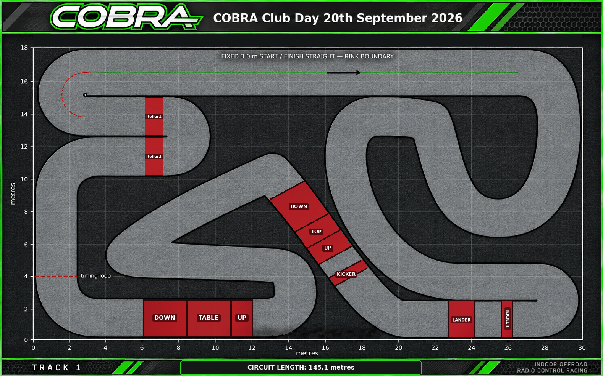

COBRA · VIRTUAL RACE REPLAY
Virtual Race Replay
Loading recorded race…
Replay update
Event track maps have now been added where plans are available. Speeds are smoother, finals start on the straight, and cars cross the timing loop at their recorded times.

Drag backwards or forwards. All cars stay on the same race clock. A downloaded video uses the selected speed.
On-track order estimated between crossings
| Pos | Car / driver | Lap | Gap to leader | Lap time | Compared with typical lap |
|---|
This is a timing-based illustration, not a reconstruction of the driven racing line. The route is traced from your track plan; positions within each lap remain estimates. Finals begin on the main straight and reach the timing loop at each driver’s recorded first-crossing time. Gaps between crossings are estimates; a completed race uses official finishing positions and results. Slower laps are highlighted when more than 10% above the driver’s median full-lap time.